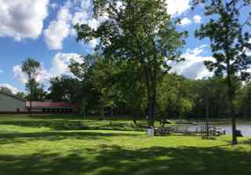

Karen High's Week at Healing Hearts Camp
Link Here to read more about Healing Hearts Camps


This is the project for my course in Web Design. I took a study break to help my friends Melissa and Scott with their Healing Hearts Camp. Here are a few highlights!
A Week to Teach Safety & Respect
Children's Schedule
| Sunday | Monday | Tuesday | Wednesday | Thursday | Friday | Saturday |
|---|---|---|---|---|---|---|
| Staff Prepare | Lessons on Respect | Practice Manners | Nature Walk&Crafts | Nature Walk&Crafts | Songs&Crafts | Parent Coronation |
| Families Arrive | Trust Falls | Cuddle Time | Olympics | Obstacle Course | Skit Prep | Homeward Bound |
Nancy Thomas has been running Healing Hearts Camp for many years so this schedule has been revised often.
For the parents, the goal is to optimize training time and application of new parenting skills. For children,
the goal is to have them want to spend time with their parents rather than the Flight Check Crew who are all
about structure and waiting patiently as long as needed for compliance. When they are able to respectfully
be with their parents, they receive nurture in the form of soft eyes, soft voices, and lots of hugs.
The Flight Check Crew began on Sunday before dinner teaching the children basic respect and manners. Tables were
set for their family according to a diagram the butler on Downton Abbey would have approved! Parents were instructed
during that time to have "Eagle Eyes" and note any elbows on tables, feet on chairs, interruptions, or eating
with mouths open. Once spotted, they raised their hands, called "Flight Check" and were rewarded with
chocolates and a stick-on jewel for their name-tag as their child was escorted to the Crew table on the far end of the dining hall to
finish their meal.
Parents were also instructed prior to dinner to fill out a card indicating what
infraction they had observed. This assisted the Flight Check Crew in having the children process their removal by
answering the question "So what happened?" truthfully. Resistant children were kept with the Flight Check Crew
as long as needed, even through the night if necessary, to process. This was when they showed us their best lies, tantrums, accusations,
and pity-parties, while their parents enjoyed the beautiful camp facilities and conversation with other adults. Some
parents had their first restful sleep in months! The Crew modeled respectful interactions and were trained to resist
showing emotions, remaining patient and calm, and trading out with each other as this was tested. Once a child had
processed what happened, they came up with their own restitution, frequently offering hand or back massages, given lovingly,
to their parents. Even by Tuesday lunch, this awesome group of parents had children using manners through most of the meal!